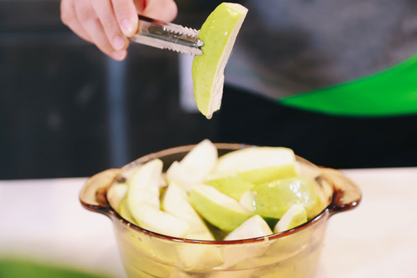

Với nước ép ổi màu xanh lá, có vị ngọt dễ chịu khi uống mang lại cảm giác thoải mái, lạ miệng. Đó là lý do nước ép ổi được nhiều người yêu thích. Thế nhưng, bạn đã biết cách làm nước ép ổi ngon và cách uống nước ép ổi đúng cách chưa? Cùng với cách pha chế các loại thức uống khác nữa được chia sẻ ngay đây.
Nguyên liệu
5 quả ổi
Đường, muối
Đá viên
Cách làm nước ép ổi
Sơ chế ổi không bị chát
Trước tiên, bạn rửa ổi thật sạch, để nguyên vỏ, bỏ phần hạt ở giữa và cắt thành những miếng ổi nhỏ. Ngâm ổi với 30gr đường cát hoặc nước đường để giảm vị chát trong ổi, đồng thời tạo màu nước ép ổi đẹp mắt hơn.
Phần đường ngâm sẽ không ảnh hưởng gì đến độ ngọt của nước ép ổi nên các bạn yên tâm nhé.
Cách pha chế nước ép ổi
Bước tiếp theo làm nước ép ổi là lần lượt cho ổi vào máy ép lấy nước.

Sau đó rót vào shaker 80ml nước ép ổi, 10ml nước đường, một chút muối và đá viên. Lắc đều hỗn hợp này và rót ra ly là được.
Công dụng của nước ép ổi là gì?
Hàm lượng vitamin C có trong quả ổi tương đối nhiều, là phương pháp điều trị cảm cúm, giảm bớt mùi hôi răng miệng.
Nước ép ổi bảo vệ đường ruột tốt, ngăn ngừa chứng tích tụ độc tố, làm dịu đường ruột nhạy cảm, chứng đau dạ dày.
Uống nước ép ổi là phương pháp hỗ trợ giảm cân được nhiều người tin tưởng lựa chọn.
Ngoài những công dụng trên, nước ép ổi có tác dụng làm đẹp da.
Những lưu ý khi uống nước ép ổi
Chỉ nên uống sau bữa ăn 30 phút hoặc giữa bữa ăn. Tuyệt đối không nên uống nước ép ổi khi đang đói. Bên cạnh đó, một số cơ thể người có triệu chứng khác biệt, bạn cần chú ý đến các phản ứng khác thường như chướng bụng, đầy ruột…
Không sử dụng ổi còn non, xanh làm nước ép hoặc ăn trực tiếp. Vì vị chát trong ổi sẽ làm hại cho dạ dày.
Không nên ăn quá nhiều hạt ổi, đặc biệt những ai bị đau dạ dày. Vì hạt ổi gây khó tiêu.
Vỏ ổi chứa nhiều vitamin C tốt cho cơ thể, nhưng những người bị tiểu đường nên gọt vỏ khi ăn hoặc làm nước ép.
Những người bị suy nhược cơ thể nên sử dụng ối dưới dạng nước ép hoặc sinh tố thì cơ thể sẽ hấp thụ tốt hơn.